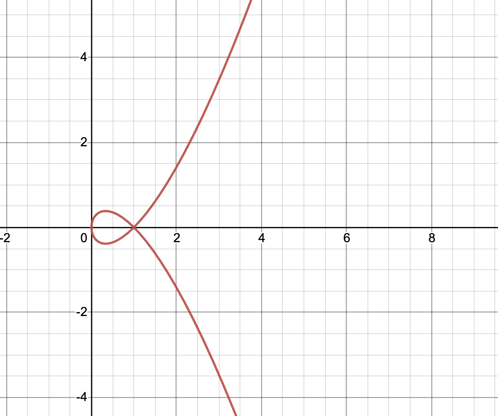

Backlinks
Table of Contents
1 Parametric Equations
Consider the curve described by the following parametric equations:
\begin{align} x(t) = t^2 \\ y(t) = t^3 - ct, {c \in \mathbb{R}} \end{align}
1.1 Rectangular Equations
Come up with function — functions, rather — for this curve. In other words, convert it to rectangular form.
Given \(x(t) = t^2\), we could figure that \(t = \sqrt{x}\). As such, replacing for the definition of \(t\) in the second statement, we could derive that:
\begin{align} y(t) =& t^3 - ct \\ \Rightarrow y(t) =& (\pm \sqrt{x})^3 - c(\pm \sqrt{x}) \\ =& \pm x\sqrt{x} \pm c\sqrt{x} \\ =& \pm \sqrt{x} (x - c) \end{align}1.2 Sketching the curve
Try sketching it!

1.3 Particle path and length
Imagine if you are a little particle on this curve, traveling from \(t=5\) to \(t=7\). What is your path, and what's the total distance you travel?
1.3.1 Start position
Setting \(c=1\), we derive that…
\begin{align} x(5) = 25 \\ y(5) = 120 \end{align}Hence, the start position of the particle is \((25,120)\).
1.3.2 End position
Hence, the end position of the particle is \((49,336)\)
1.3.3 Direction of Travel
The middle point of the travel is at \(t = \frac{12}{2} = 6\).
The derivatives of the parameter equations are as follows:
\begin{align} x'(t) = 2t \\ y'(t) = 3t^2-c \end{align}Therefore, the derivative in the direction of the particle travel is:
\begin{equation} \frac{dy}{dx} = \frac{3t^2-c}{2t} \end{equation}At \(c=1\) and \(t=6\), the value is therefore:
\begin{equation} \frac{108-1}{12} \approx 8.9 \end{equation}As the value of the derivative is positive — that as x increases, y increases, we know that at \(t=8\) the particle is traveling in a positive direction as \(x\) increases.
1.3.4 Total Distance of Travel
To figure the distance of travel, we need to apply the following expression for arc length:
\begin{align} \int_{t=5}^{t=7} & \sqrt{(\frac{dx}{dt})^2 + (\frac{dy}{dt})^2} dt \\ \int_{t=5}^{t=7} & \sqrt{(2t)^2 + (3t^2-c)^2} dt \end{align}At this point, we set \(c=0\) as an example value.
\begin{align} \int_{t=5}^{t=7} & \sqrt{(2t)^2 + (3t^2)^2} dt \\ \int_{t=5}^{t=7} & \sqrt{4t^2 + 9t^4} dt \\ \int_{t=5}^{t=7} & \sqrt{t^2(4 + 9t^2)} dt \\ \int_{t=5}^{t=7} & t \sqrt{(4 + 9t^2)} dt \end{align}We now perform u-sub upon this problem to figure the final solution.
\begin{align} Let\ u=(4+9t^2)\\ \frac{du}{dt} = 18t \\ dt = \frac{1}{18t}du \end{align} \begin{align} \frac{1}{18} \int_{t=5}^{t=7} & u^{\frac{1}{2}} du \\ \frac{1}{18} & (\frac{u^{\frac{3}{2}}}{\frac{3}{2}} \mid^3_2) \\ \frac{1}{18} & (\frac{2\sqrt{u^3}}{3} \mid^3_2) \\ \frac{1}{18} & (\frac{2\sqrt{(4+9t^2)^3}}{3} \mid^3_2) \\ \frac{1}{18} & ((\frac{2\sqrt{(4+9(3^2))^3}}{3}) - (\frac{2\sqrt{(4+9(2^2))^3}}{3})) \approx 19.65 \\ \end{align}The particle travels about \(19.65\) units.
2 Solids of Revolution
Consider the shape made by taking the function \(f(x) = \frac{1}{x}\) from \(x=1\) out to \(\infty\) by spinning it around the x-axis.
2.1 Surface Area
The surface area of the resulting shape could be deducted by applying the circumference formula for circles produced by rotation. That is —
\begin{align} & 2\pi \int_1^\infty \frac{1}{x} dx \\ \Rightarrow & 2\pi \lim_{b \to \infty} (ln(x) \mid^b_1) dx \\ \Rightarrow & \infty \end{align}2.2 Volume
The volume calculation is much the same (though, with dramatically different results at infinity), except that the "radius" of the circles are squared and multiplied to \(\pi\) to produce the area of each circular slice.
\begin{align} & 2\pi \int_1^\infty x^{-2} dx \\ \Rightarrow & \pi \lim_{b \to \infty} \frac{-1}{x} \mid^b_1 dx \\ \Rightarrow & -\pi \end{align}